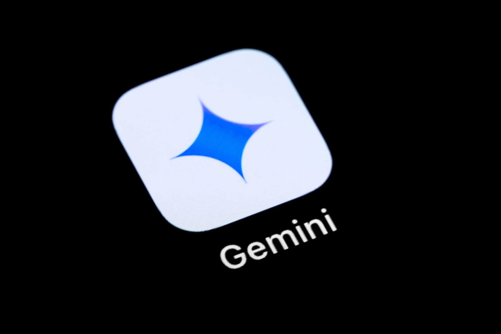
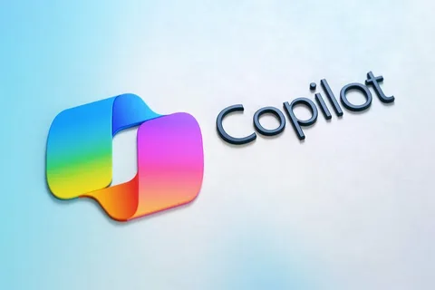

ChatGPT
ChatGPT es un chatbot de inteligencia artificial desarrollado por OpenAI que entiende y genera texto similar al humano.

ChatGPT es un chatbot de inteligencia artificial desarrollado por OpenAI que entiende y genera texto similar al humano.
Gemini es la familia de modelos de inteligencia artificial (IA) multimodal y generativa de Google.
Microsoft Copilot es un asistente de inteligencia artificial integrado en las aplicaciones de Microsoft (como Word, Teams, Outlook) y en el sistema operativo.
